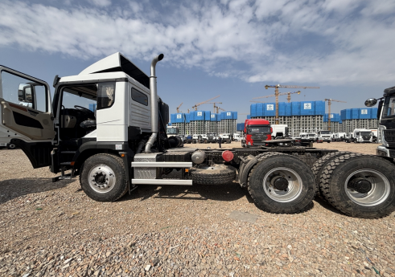
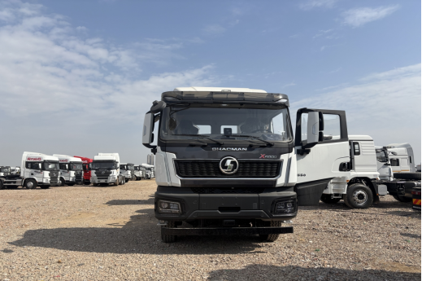

Direct answer: This real-vehicle reference shows a SHACMAN X5000 6x4 tractor with a low-roof cab, tandem rear axles and a construction-style front bumper. It can be discussed for project logistics and mixed-road semi-trailer work, but the photographs do not confirm engine power, transmission, axle ratio, fifth-wheel rating, legal GCW or price. Those items must be matched to the buyer's trailer, cargo, route and destination before quotation.
Why this tractor configuration needs its own buying discussion
A highway tractor and a project-haulage tractor may share the same model family while requiring different priorities. Continuous paved-road work puts emphasis on cruising efficiency, driver comfort and fuel range. Construction supply, quarry support and infrastructure logistics may add unpaved access roads, low-speed maneuvering, dust, steeper temporary ramps and frequent transitions between site roads and public highways.
The useful question is therefore not simply whether an X5000 is available. Buyers should define where the tractor will work, what semi-trailer it will pull and how much of each trip occurs on rough access roads. The final truck must be reviewed as part of a tractor-trailer combination rather than as an isolated chassis.
What the real photos confirm
The supplied images show the exterior of a white X5000 tractor with black lower trim, a visibly low-roof cab, two rear axles, a fifth-wheel area behind the cab and a robust front bumper layout. They also show fuel-tank and chassis-area packaging from both sides. These are useful visual references for cab form, access, frame layout and external arrangement.
The images do not prove a particular engine, horsepower, emission level, transmission, rear-axle ratio, suspension rating, tire specification or export destination. For that reason, this guide does not assign unverified technical figures to the vehicle. A quotation should separate what is visible in the reference photos from what is confirmed in the final specification sheet.

Left-side reference view showing the low-roof cab, tandem rear axle group and chassis packaging.
Low-roof cab or high-roof sleeper cab?
Cab choice should follow the duty cycle. A low-roof cab may be relevant when vehicle height, site access, shorter regional shifts or a simpler cab arrangement is important. A high-roof sleeper can be more appropriate for long-distance operations where drivers spend nights in the vehicle and need additional storage or rest space. Neither choice is universally better.
Before selecting the cab, state the average trip length, number of drivers, overnight use, maximum height restrictions and whether the vehicle will operate beneath loading structures, workshop doors or other constrained access points. Buyers should also confirm seat arrangement, climate-control needs, mirrors, lighting, warning equipment and the language required for labels and instruments.
Construction-style bumper: confirm the actual requirement
The front image shows a bumper form suited to the visual character of a project-work tractor. Buyers sometimes request this style when access roads are uneven or when the truck will spend part of its duty cycle around construction sites. However, appearance alone does not define approach clearance, protection level or compatibility with local safety requirements.
Include the expected road obstacles, ramp angles, site surface and required towing or recovery provisions in the RFQ. Final bumper, under-run protection, lighting position and front recovery arrangement should be confirmed in drawings or inspection photos before shipment.

Front reference view. The final bumper, lighting, recovery points and destination compliance remain order-specific.
Match the 6x4 tractor to the semi-trailer and cargo
A 6x4 layout is commonly discussed where buyers need two driven rear axles for demanding loaded operation, but axle layout is only one part of the selection. The supplier needs the semi-trailer type, cargo, expected operating weight, fifth-wheel height, kingpin arrangement and air and electrical connection requirements. A lowbed carrying machinery creates a different duty from a flatbed carrying steel, a sidewall trailer carrying construction materials or a tipper semi-trailer working on site roads.
Do not treat nominal trailer capacity as the only design input. The combination must also account for axle-load distribution, coupling position, road limits, turning space and the difference between public-road travel and private-site operation. Final permissible weights are determined by the approved vehicle specification and destination rules, not by a general online claim.
Powertrain and braking questions that matter
Horsepower is not a complete tractor specification. Route gradients, target operating weight, average speed, low-speed site work and cruising distance influence engine, transmission and axle-ratio discussion. Buyers should explain whether the truck needs frequent starts on gradients, long downhill control, highway cruising, or a balance of all three.
Ask the quotation to identify the proposed engine and emission standard, transmission type and ratios, rear-axle ratio, service brake configuration and any auxiliary braking option. Availability can vary by configuration. No powertrain figure should be assumed from the exterior photos, and any stated option should be checked against the final technical sheet.
Tires, fuel range and service planning
Tire selection should reflect axle loading, road surface, speed, heat and local replacement availability. A tread intended mainly for paved-road efficiency may not be the first choice for repeated loose-surface access, while an aggressive site-oriented pattern can change noise, wear and fuel use on long highway sections. Ask for the proposed tire size, pattern and spare-wheel arrangement.
Fuel-tank capacity should be planned around route distance, fuel availability and weight distribution. Fleet buyers should also request a service-parts recommendation for the first operating period and confirm which filters, belts, brake parts and routine maintenance items can be supplied with the trucks.
Export inspection should verify the ordered configuration
Before shipment, inspection should connect the physical truck to the signed specification. Useful checks include model and identification information, axle layout, cab type, engine and transmission identification, tire markings, fifth wheel, tanks, lighting, mirrors, tools, warning items and visible transport damage. Photos should cover the front, both sides, rear chassis area, cab interior and key identification plates.
If the tractor must connect to an existing semi-trailer, provide the trailer information before production and request a coupling review. Shipping preparation, documents and any destination-specific equipment should also be listed in the order checklist rather than left as assumptions.
Information to send for a useful quotation
- Destination country and port, steering side and known emission or registration requirements.
- Semi-trailer type, kingpin and fifth-wheel information, cargo and target operating weight.
- Daily distance, paved-road percentage, site-road surface, gradients and expected cruising speed.
- Low-roof or sleeper-cab requirement, number of drivers and overnight operation.
- Required braking, fuel-range, tire, recovery, lighting and safety arrangements.
- Quantity, inspection needs, spare-parts package and preferred EXW, FOB or CIF quotation basis.
Frequently asked questions
Is this photographed X5000 suitable for every construction-haulage project?
No. It is a real 6x4 low-roof reference vehicle, but the powertrain, axle ratio, braking, fifth wheel, tires and legal operating weight must be confirmed for the actual route, trailer and destination.
Why would a buyer choose a low-roof tractor cab?
A low-roof cab may suit height-controlled access, shorter shifts or a project-oriented duty. Buyers planning long-distance overnight work should compare it with an available sleeper-cab configuration.
Does the construction-style bumper confirm off-road capability?
No. Bumper appearance alone does not establish ground clearance, traction or legal compliance. Road surface, gradients, axle layout, tires and the completed specification must be reviewed together.
Are horsepower and price confirmed?
No. The photos do not confirm powertrain details or price. Final specification and current quotation are prepared after the buyer provides the operating requirements.
What should I send with an RFQ?
Send the destination, trailer, cargo, target operating weight, route, gradients, road surface, cab requirement, quantity, inspection request and shipping basis.
Request an X5000 6x4 tractor truck quotation
Send Andy your trailer, cargo, route, operating weight and destination. We will check an available configuration before preparing the quotation.